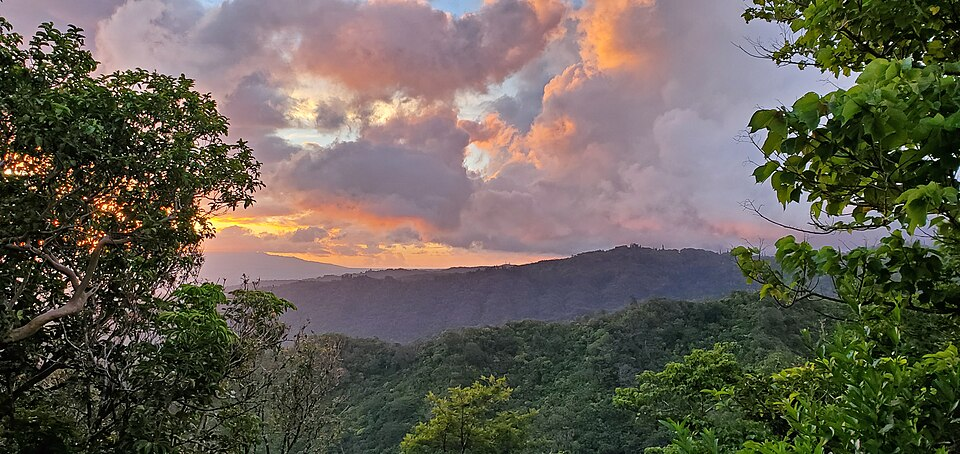

Tantalus Drive
Place: Tantalus Drive, Honolulu, Oʻahu
Type: Scenic road / ridge route / volcanic landscape
Story it tells: A winding Honolulu road whose Greek mythological name overlays older Hawaiian place names, volcanic history, scenic recreation, and the changing upland landscape above the city.

Tantalus Drive is a winding upland road above Honolulu, climbing the ridge system behind Pūowaina, commonly known as Punchbowl. The name comes from Tantalus, a figure from Greek mythology condemned to forever reach for food and water that moved away from him. According to local tradition, the name was given by Punahou students in the 19th century because the summit seemed to keep receding as they climbed toward it.
The Hawaiian name for the peak commonly known as Mount Tantalus is Puʻu ʻŌhiʻa, often translated as “ʻōhiʻa hill.” The name points to an older Hawaiian understanding of the landscape, before the uplands above Honolulu became widely known through imported classical references, scenic drives, and English-language recreation culture. Tantalus reflects one of the ways foreign names were layered onto Hawaiian places during the territorial and early modern periods.
The road itself became part of Honolulu’s upland recreation landscape in the late 19th and early 20th centuries. What began as rough wagon and gravel routes later developed into the Tantalus and Round Top loop, known for its steep curves, shaded valleys, forested slopes, and panoramic views over Honolulu, Waikīkī, Lēʻahi (Diamond Head), and the south shore of Oʻahu. Wealthy kamaʻāina families also built homes in the cooler ridges above the growing city.
Tantalus is also part of a larger volcanic landscape. The cinder cone formed during the later Honolulu Volcanics, the same volcanic episode that produced landmarks such as Pūowaina, Lēʻahi, and Koko Head. During World War II, the ridge had military significance, including fire-control facilities connected to Oʻahu’s coastal defense system.
Today, Tantalus Drive remains one of Honolulu’s best-known scenic routes, used by hikers, cyclists, drivers, and visitors seeking views of the city below. Beneath the lookout views and imported mythological name is an older landscape: Puʻu ʻŌhiʻa, a volcanic ridge, a recreational road, a military lookout, and a place where Honolulu’s older and newer identities meet above the city.